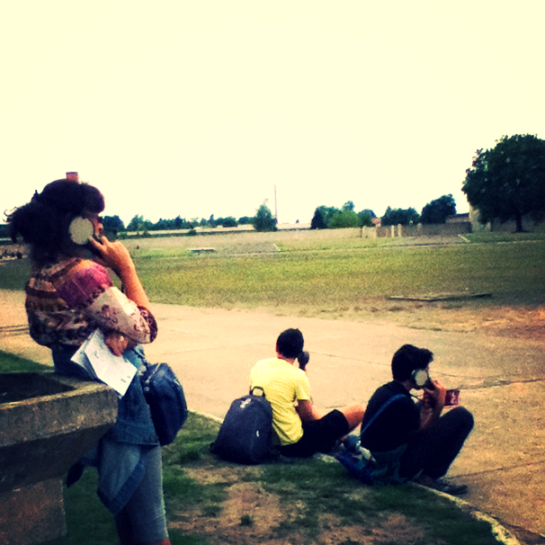
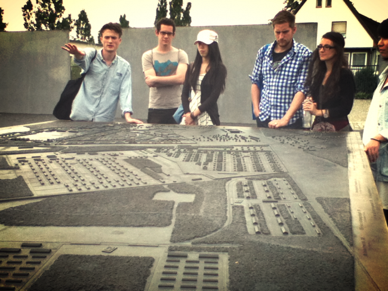
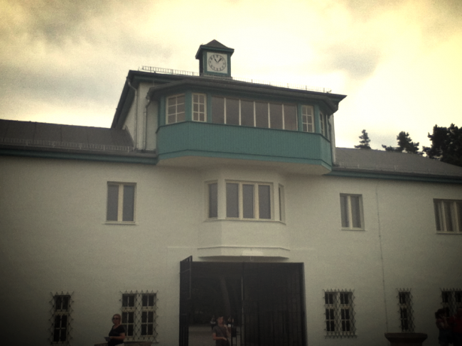

Rave: Why Remembering the Holocaust is Good for Immigrants
In 2005, Germany officially became an immigration country with the establishment of its federal office for migration (BAMF). A wave of new laws and institutions were to follow, set to absorb those meant to stay – not just guest-workers, not temporary migrants, not comrades (so-called Vertragsarbeiter from communist countries), but immigrants. In turn, German identity has been shoved into the limelight. This country and its residents have witnessed plenty of change and adjustment, but redefining self and country after the fall of the Berlin Wall (even during the student protests of 1968) had little to do with defining oneself in opposition to a foreign but stationary Other. Although individuals and families with non-German origins have been coming for centuries, confronting what will be an official change in what it means to be German is rather new, rather fresh.

Who are the Germans anyway? A BBC series answers this question by-doing
The question – who are the Germans anyway? – becomes increasingly important when deciding what to impart to newcomers. Which traditions deserve saving? What is important? The answers to these questions are not as simple as good bread or Hefeweizen. Expats with an outsider perspective are not shy in constructing simple ‘Germanness’ for the Germans themselves. The BBC reality TV series “Make Me a German” plays with stereotypes and assumptions about what is typisch deutsch (typically German); the viral blog post What I know about Germans is just one example of trendy list-making of all things ‘German’ by temporary residents; Berlin-based comedy writer Adam Fletcher has created an entire brand just based on the funny categorization of ‘Germanness’. On a tote bag in Fletcher’s line of nifty and hilarious merchandise: an engineer’s instruments, a watch, whole wheat, nude culture, asparagus. But where is the concentration camp in these lists, this series, or this fashion line? Where is the Holocaust?

Entrance to Sachsenhausen concentration camp, Oranienburg, DE
This past weekend, I embarked on a day-long tour of the former Sachsenhausen concentration camp with a good friend here in Berlin – a friend, who just happens to be Jewish and originally from Ukraine. We were a small group for an English speaking tour, minuscule in comparison to the masses of Italian and Spanish tour groups all heading to the same location. Two Taiwanese students, an American-Spanish couple on vacation from their residence in Saudi Arabia, a Brazilian student traveling Europe for the first time, a Bulgarian engineer, and Max and I (both Americans). We met our guide Alex, exchanged small talk, in part to find out why we all were willing to commit seven hours on a Sunday to hearing about tragedy, visiting the haunted, vast expanses of Sachsenhausen – a concentration camp just right on the edge of Berlin, reachable with the S-Bahn (public transit).
In contemporary political discussions about integration of immigrants into ‘German society’, no one claims that integration requires learning the lessons of the Holocaust. And yet, federal integration programs combined with international perception of Germanness say just that. The public concept of historical memorialization and its application, called Vergangenheitsbewältigung, is just as important to living in German society as vollkorn Brötchen or Oktoberfest.
On our tour’s long walk from Oranienburg station to the gates of the camp, passing average-looking ‘German’ homes with gardens neatly segregated from the street by high fences, I spoke with Natalia (the student from São Paulo) about Germany, the Germans, and the Holocaust. She brought up an interesting point: “How do the Germans feel about it – that people go to Venice to see the canals and to Berlin to see the Holocaust? I can imagine they don’t like it”. A man jogged past us in bright running-gear, his dog trotting behind him, just passing the entrance to the camp. This is part of being German – accepting that this is how you are seen in the world, that this history is an indivisible part of any sense of being German, it seemed.

For new residents of Berlin, the past still matters and maybe even more than integration programs can provide for. My Ukrainian-American-Jewish friend Max (gotta love them hyphens) and his family left Kiev when he was five, in part due to Antisemitism. His great-great-grandparents were killed in the Babi Yar massacre of 1941. The precarious relationship of the German government to its new status as an immigration country, let alone the way it classifies its non-German residents, is very much familiar to Max. “So, how does that make you feel as a Jew in Germany?”, I asked a bit sheepishly, recognizing the change of context from friendly chatter we usually entertain to rrrrrreal real fast. Many Jewish immigrants to Germany have likely heard this question before. “Antisemitism is more the exception than the rule. I don’t feel confronted by it in daily life…but I know it’s there”, he concluded. He is supportive of Antifa movements, aware that being Jewish in Germany is complicated but totally do-able, requiring a little finesse. Berlin, of course, has all kinds of finesse.
Our tour entered Sachsenhausen through the renovated watchtower and its metal gates, a construction bearing the architectural legacy of the post-war custodians of the camp and many others – the (East) German Democratic Republic. A stream of other visitors followed our trail, audio devices pressed to their ears. I felt strange, almost supportive of an odd form of tourism, securing Natalia’s comment about the connection of Holocaust tourism to German identity in reality.

A cacophony of languages could be heard as we moved from one monument within the camp to another – Swedish, Japanese, British English, French – all reading the same saddening information on plaques or biographical exhibition panels, all bearing witness to tragedy and an integral part (if not the deciding event) of this country’s history and present.
We moved to the far edge of the camp, heading toward the restored Barrack 38: the Jewish barrack turned memorial documentation center. As we entered the small structure, the smell of charred wood was unmistakable, paint peeling from the siding of the latrine and sleeping porch. Arson. In 1992, German identity was thrust under international limelight after reunification and the growing pains that followed, further exacerbated by the rise of Neonazism in the former East. Arson was a key expression of this tension. This same year of the attack on Barrack 38, Neonazis set fire to a refugee housing facility not too far from Berlin, terrorizing residents in the riot of Rostock-Lichtenhagen. The political activities of parties and movements, such as the NPD (German Nationalist Party with strong Neonazi ties), as well as the recent Neonazi terror-cell and its string of xenophobic murders across Germany, point to a contemporary relevance of the Nazi past to Germany’s future as a country of immigration. The Holocaust and its constitutive role in Germany identity has been part of the country’s historical development ever since. What to teach immigrants – remember the Holocaust.

We left the camp in a drizzle of rain, boarding the S-Bahn back to Berlin. As our guide Alex (speaking a high variety of the King’s English) began to share an illustrative vignette about the end of the war and deterioration of Nazi moral power in Germany, passengers in the train appeared perturbed. A woman with fiery hair shook her head in disgust; she furled insults in German in our guide’s direction (understood only by me at the time). Another stern-faced German woman entered shortly after, raising her voice to replace that of the recently exited red-haired woman. Her lips quivering, she looked to be my mother’s age, the veins in her neck traumatically flinching, exposed. “Why don’t you just stop talking. It is rude what you are doing. It is not right what you are doing. We don’t need to be lectured to! You must stop”, she said abruptly in English.
German trains and buses are anything but loud, each keeping to his or herself in a very strong show of privacy. This may be a stereotype, but it illuminates the particular conflict that ensued quite well.
With eyes closed in shock, our guide explained that we were on an educational tour of the concentration camp, that he had been doing this for years and had never had such a negative reaction. He kept calm and showed no sign of anger or distress. The female companion of the pulsing-veined woman responded loudly with perhaps the only words she knew: “shut uppp!”, popping the ‘p’ just at the end.
My friend Max intervened – asked our guide to have a seat, standing to allow him to do so. With hands shaking and eyes kept closed, Alex continued his narrative: the time after the war, the protests of 1968, de-Nazification in educational and political institutions, current movements of young people, general skepticism toward patriotism in Germany ever since – all forming parts of a whole history that has never really come to a close.
As we exited the train, the pulsing-veined woman ran to Alex, extending her hand to graze his: “I agree with everything you said!”, she said, “but you were just speaking so loud for a public place! It is a train, not a classroom. Your voice was really just too loud for all of us, so for next time, just speak quieter.” She paused, Alex thanked her. And then with one last quiver of the lip: “I was one of those Germans you talked about, one of those students with guilt for something I wasn’t even old enough to have participated in. So thank you for what you said…”
“I don’t want anyone thinking ‘oh these horrible Germans’. I don’t want you all leaving thinking that,” the woman added as we had nearly let the train doors shut behind us, her eyes directed at all of us in a show of penetrating honesty. Education about the past does more than just memorialize or prevent reoccurrence: it avoids essentialization of historical events and preserves the complexity of it all.

With the new immigration status of 2005 and the integration programs that followed, came the creation of an ‘integration curriculum’, including cultural orientation that included this very facet of Germanness: the Holocaust. Immigrants participating in the integration courses visit historical institutions designed to communicate the significance of the Nazi period for Germany as both a modern state and as a group of transnational or transethnic individuals.
Official curriculum including Holocaust field-trips doesn’t answer all questions, however. Politicians are still scratching their heads at the ‘German question’ – each party choosing which elements it wants to claim for the imagined ‘nation’, some famously campaigning for a Leitkultur (one central guiding culture for Germany by Germans). Such a sentiment has been heavily criticized by most politicians outside of the leading conservative party (CDU), including the head of the Jewish Council of Germany, Paul Spiegel. In a speech to Parliament, Spiegel said “Ist es etwa deutsche Leitkultur, Fremde zu jagen, Synagogen anzuzünden, Obdachlose zu töten?”, “is it ‘German culture’ to hunt down foreigners, to light synagogues on fire, to kill the homeless?” The Holocaust is not far from these debates about Germanness, thus it is no wonder that it is included at least in educational programs to include newcomers in German society.
Today’s Germany – an immigration country – is a republic built on tragic events like the Holocaust, just as France is a country built on colonialism. This is not to say that countries and their residents are reducible to history. Rather it is to say that institutions and individuals are still intimately connected to what came before. It is about understanding how one can relate to such a history in its contemporary place, shaping either collective guilt or political activism (in the likes of Antifa) just the same. Everything has a context, and it is this context that immigrants to Germany should learn to understand for the sake of a more complete country – a civic society which respects differences and celebrates them. For Germany is not just for those who were once classified as ‘ethnically German’, it is for anyone that chooses to reside in Germany. Becoming German* is understanding history and what it might mean for the present, regardless of ethnicity.
-By Kelly Miller
*Not sure, if you are German? Take this funny quiz from none other than Adam Fletcher here.
Our free tour to Sachsenhausen concentration camp was provided by Vive Berlin Tours, meeting Tuesdays, Fridays, and Sundays at 10am at Balzac Coffee on Potsdamer Platz year-round. Our guide, Alex, comes highly recommended, as does this cooperative-style tour company which prides itself on expertise and narrative, as well as fairness for its employees.
Photo source: first image linked to source, otherwise taken by Kelly Miller
Wow, really profound.
I’ve not bolstered up the courage to visit Sachsenhausen, even after 6 years in Berlin.